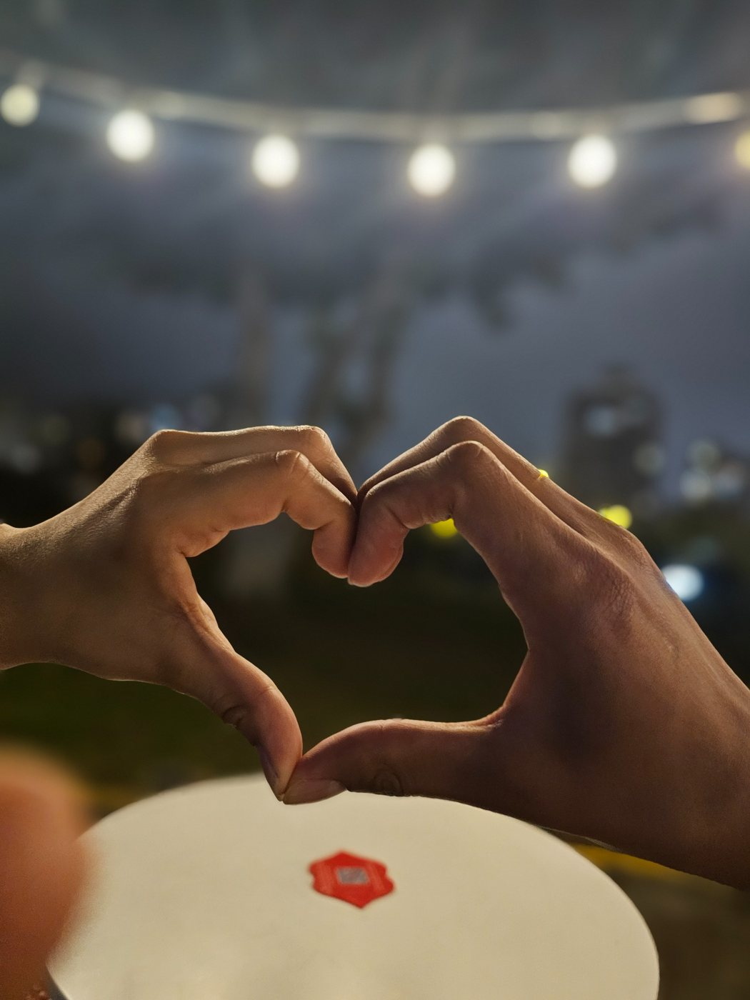

Un pequeño viaje por nuestra historia
Los momentos
que guardamos.
Hay historias que viven en las cosas pequeñas: una sonrisa, una conversación y todos esos instantes que merecen volver a mirarse.
Empezar el recorrido ↗
Una historia llena de momentos
Para recordar todo aquello que hizo especial el camino.
Nuestro álbum
Un momento
a la vez.
Estas son las imágenes que ya estaban en el repositorio. Los números ayudan a contar la historia detrás de cada una.
Para el final
Palabras guardadas
con cariño.
Aquí irá un espacio especial para las cartas y el dibujo, después de recorrer los recuerdos.